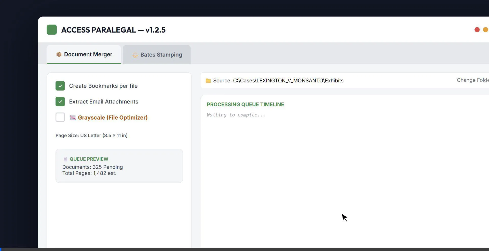

Engineered specifically for modern legal teams. Securely compile court-ready master bundles, extract attachments, and lock in Bates serialization with zero cloud security risk.

Enterprise-grade processing executing locally on your device.
Drag and drop .EML files directly. The engine auto-renders gorgeous executive cover sheets and nests all attached PDFs natively into the master bookmark outline.
Forget easily deletable annotations. Our module injects serializations straight into the PDF content stream, vector-locking authentication into the page instruction layer.
Easily toggle dynamic Grayscale reduction for scanned legacy documents and emails, shrinking output file sizes by up to 70% to satisfy Federal PACER upload limits.
Download the premium, zero-friction native installer for your OS.